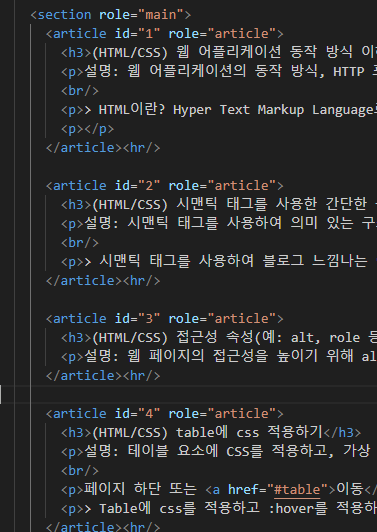
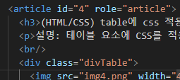
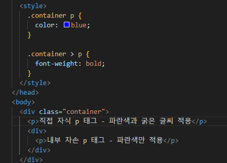
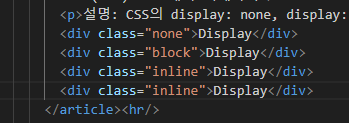
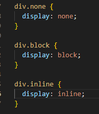
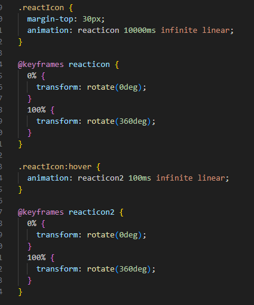

(HTML/CSS) 웹 어플리케이션 동작 방식 이해하기
설명: 웹 어플리케이션의 동작 방식, HTTP 프로토콜, 프론트엔드와 백엔드 기술을 이해합니다. 웹 애플리케이션 동작 방식을 정리한 문서를 제출합니다.
> 웹 어플리케이션은 클라이언트와 서버 사이에 통신을 하며 작동한다
클라이언트에서는 서버에 요청을 보내고 응답을 받는 걸 담당하고
서버에서는 요청을 받아서 데이터를 처리하고 응답을 해주는 담당을 한다
HTTP : Hypertext Transfer Protocal
웹에서 데이터를 주고 받기 위한 프로토콜
메서드로는 GET, POST, PUT, DELETE가 있다
Frontend는 사용자의 눈에 보이고, 사용자와 상호작용 하는 부분을 담당한다
언어로는 HTML, CSS, JS가 있고 각종 프레임워크와 라이브러리도 존재한다 (ex.bootstrap, react)
Backend는 서버에서 발생하는 모든 작업을 담당하며 node.js, django 등 프레임워크가 있다
또한 서버에 데이터를 저장할 수 있는 Database로는 MySQL, PostgreSQL, MongoDB 등이 있다
(HTML/CSS) 시맨틱 태그를 사용한 간단한 블로그 페이지 제작하기
설명: 시맨틱 태그를 사용하여 의미 있는 구조를 가진 간단한 블로그 페이지를 제작합니다. 블로그를 구현한 코드 파일과 웹 페이지 스크린샷을 제출합니다.
> 시맨틱 태그를 사용하여 블로그 느낌나는 이 페이지를 만들고 netlify로 배포하여 강사님께 제출. 깃허브 바로가기
(HTML/CSS) 접근성 속성(예: alt, role 등) 추가하기
설명: 웹 페이지의 접근성을 높이기 위해 alt나 role 등의 접근성 속성을 추가합니다. 접근성 속성이 포함된 코드 파일을 제출합니다.

(HTML/CSS) table에 css 적용하기
설명: 테이블 요소에 CSS를 적용하고, 가상 선택자를 사용하여 :hover 상태에서 셀의 색상이 변경되도록 구현합니다. 테이블에 CSS를 적용한 코드 파일과 웹 페이지 스크린샷을 제출합니다.
(CSS) 기본 선택자 이해하기
설명: 태그, 클래스, id 선택자를 사용하여 CSS를 작성합니다. 태그, 클래스, id 선택자를 사용해본 코드 파일을 제출합니다.

(CSS) 가상 선택자 이해하기
설명: CSS 가상 선택자인 :checked, :enabled, :disabled를 사용하여 스타일링합니다. 가상 선택자를 사용한 코드 파일과 웹 페이지 스크린샷을 제출합니다.
(CSS) 자손 선택자 이해하기
설명: CSS 자손 선택자인 >의 사용 여부에 따라 스타일이 달라지는 예제를 통해 자손 선택자를 이해합니다. 스타일이 달라지는 웹 페이지 스크린샷을 제출합니다.

(CSS) css 배치 이해하기
설명: CSS의 display: none, display: block, display: inline 속성을 이해하고, 이를 사용하여 요소를 배치합니다. none, block, inline 속성이 포함된 코드 파일과 웹 페이지 스크린샷을 제출합니다.
Display
Display
Display
Display


(CSS) css 박스 모델 이해하기
설명: CSS 박스 모델은 웹 페이지의 요소를 구성하는 기본 개념입니다. margin, padding, border 속성을 이해하고, 이를 활용하여 박스 모델을 작성합니다. margin, padding, border 속성이 포함된 코드 파일과 웹 페이지 스크린샷을 제출합니다.
(CSS) css 트랜지션과 호버 효과를 적용한 버튼 디자인하기
설명: CSS 트랜지션과 호버 효과를 사용하여 인터랙티브한 버튼을 디자인합니다. 트랜지션과 호버 효과가 포함된 코드 파일과 웹 페이지 스크린샷을 제출합니다.
